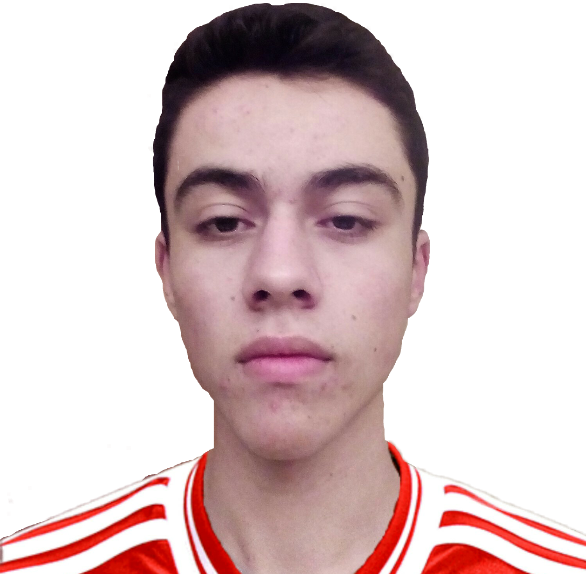
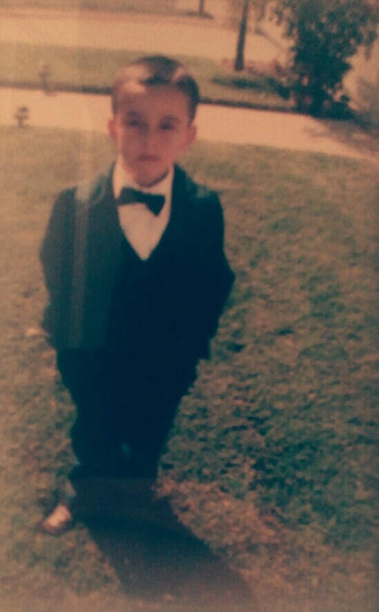

The Monologue of the Great
Greatness began on April 1st 2000 in Oakland, California. I was called Rodolfo of the Elenes. I was born in a family who lived off potato farming. Everyday I ate potato for breakfast. Potato for lunch. Potato for dinner. Potato was the life. I had nothing else but potatoes. One day I said na fam when asked to eat potatoes. I was like only 2 years old. Then my parents disowned me. But you know its not like I wanted to grow up with a healthy life and stuff. In reality that's what pushed forward towards greatness started. My first move of greatness was to get a small loan of a million dollars. Then I bought myself a suit and I was flexing like Jay Gatsby even tho I didn't own it. It only cost me tree fiddy.
With the money I had I decided to invest money in the MemeEconomy. This was the riskiest path I took in my life as the MemeEconomy was only one year old and no one knew if it would collapse or grow. I had to choose between many wonderful memes but I chose the Mocking Spongebob meme. I was laughed at by other MemeInvestors but at the end I got the last laugh.

Then I got bored and paid my loan off, picked up my money gained from MemeInvestment, went home and apologized to parents and bought house to move to Patterson and I now attend to Patterson High School and we live a happy life.